7210B15 R.R. UNDERDOOR SIDE MEMBER
- Path
- Procedures > 72 PANELS AND FRAMES > 7210 REMOVING-REFITTING > 7210B structure elements-central and rear part > 7210B15 R.R. UNDERDOOR SIDE MEMBER
- Kind
- repair procedure (removal / refitting; the operation number is the code)
- Applies to
- all engines; all production periods
- Interactive page
- https://sloeber94.github.io/elrnDB-fDbl/en/#/2585254
Applies to: all engines; all production periods
 Removing
Removing
 Refitting
RefittingCheck if any of the connected parts are deformed by checking body alignment dimensions. Use appropriate measurement tools (reference rigs, templates or gauges).
Straighten the body if necessary.
1. Use a chamfering machine to reduce the weld spots on the edges of the upper part (1a) and lower part (1b) of the door sill rail trim.
2. Using pneumatic saw (2a) to cut the rail trim under the door following the cutting lines (2b) shown in the figure.
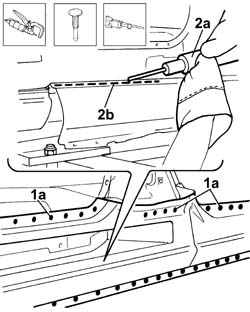
Applies to: all engines; all production periods
1. Use a chamfering machine (1a) to reduce the weld spots (1b) on the central edge shown.
2. Use a hammer and scalpel (2a) to separate the trim from the frame, then remove part of the trim (2b).
Use suitable pliers to remove the cut edges from the body.
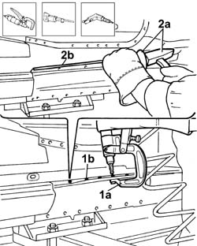
Applies to: all engines; all production periods
1. Use a chamfering machine (1a) to reduce the weld spots (1b) in the lower part (1c) and upper part of the front rail frame.
2. Use a hammer and chisel (2a) to separate frame (2b) from the body, then remove part of the trim.
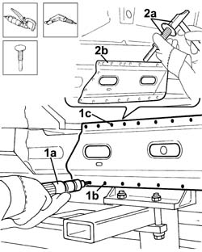
Applies to: all engines; all production periods
1. Trace out cutting line (1b) on rear wing (1a), then use a pneumatic saw to cut along the line traced previously.
2. Use a chamfering machine (2a) to reduce the weld spots on the upper area of the frame (2b) and the lower area (2c) of the rail frame.
Separate the frame from the body, then remove part of the frame.
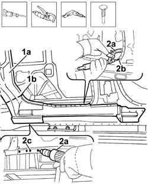
Applies to: all engines; all production periods
Refitting
Removing1. Straighten the edges of the panel and grind the entire affected body surface.
2. Apply electro-galvanized paint to the body edges affected by the welding.
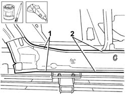
Applies to: all engines; all production periods
Straighten the edges of the panel if necessary.
1. Use a rotary brush to remove the corrosion-proofing around the edge of the replacement rail reinforcement.
2. Apply electro-galvanized paint to the edges in contact with the body.
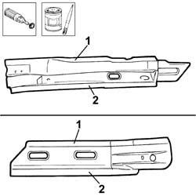
Applies to: all engines; all production periods
1. Correctly position the replacement rear rail frame (1a) on the bodyshell and secure it using self-locking clamps (1b).
Check it is properly aligned.
2. Spot weld along the area shown in the figure.
3. Fill weld in the area shown in the figure.
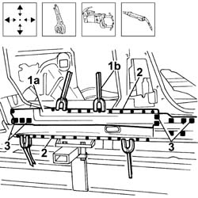
Applies to: all engines; all production periods
1. Correctly position the replacement front rail frame (1a) on the bodyshell and secure it using self-locking clamps (1b).
Check it is properly aligned.
2. Spot weld along the area shown in the figure.
3. Fill weld in the area shown in the figure.
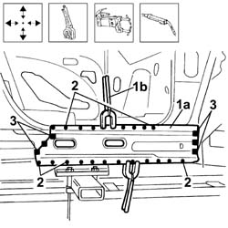
Applies to: all engines; all production periods
1. Position the central pillar reinforcement.
Check the correct positioning
2. Spot weld along the area shown in the diagram.
3. Fill weld in the area shown in the figure.
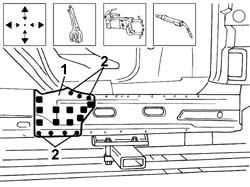
Applies to: all engines; all production periods
Straighten the edges of the panel if necessary.
1. Remove the anti-corrosion treatment from the entire perimeter of the replacement front and rear rail trim using a rotary brush.
2. Apply electro-galvanized paint to the edges in contact with the body.
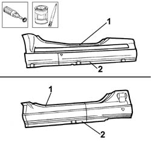
Applies to: all engines; all production periods
Hold the replacement central pillar parts in place temporarily.
1. Correctly position the replacement rail trim parts (1a) and (1b) on the underlying frame and secure it using self-locking clamps (1c).
Check it is properly aligned with the surrounding parts.
2. Seam weld along the areas shown in the figure.
3. Spot weld along the area shown in the figure.
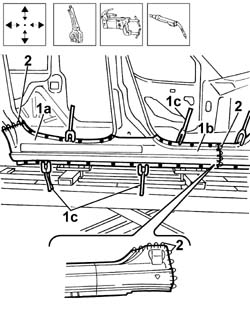
Applies to: all engines; all production periods
Check that the welded parts are correctly positioned.
Level the spot welds using a disc grinder.
Use a rotary brush to clean the inner parts.
Apply electro-galvanizing paint to the parts which have been ground.